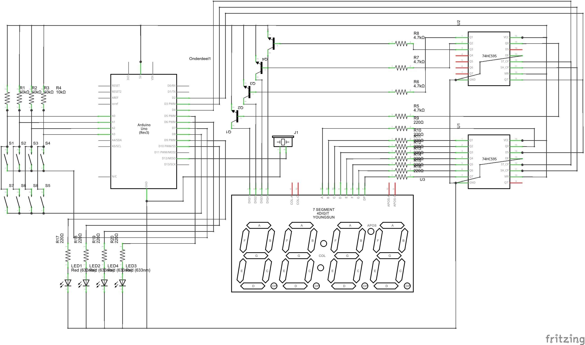

Bouwplan
Het doel van ons eerste project is een kookplaat maken. We moeten dit doen met behulp van onze Arduino Uno en de kookplaat zelf wordt gesimuleerd door 4 LEDjes op een breadboard. Uiteindelijk moeten het display en het toetsenbord op een nieuwe printplaat gesoldeerd worden.
Eisen voor de kookplaat:
- Aan/Uit knop, zet de software Aan/uit.
- Kinderslot, kookplaat wordt vergrendeld/ ontgrendeld door de toets 2 seconden ingedrukt te houden.
- +/- toetsen, de [ + ] knop zorgt voor het verhogen van de temperatuur en de [ - ] knop zorgt voor het verlagen van de temperatuur.
- 4 selectie knoppen, deze knoppen zorgen voor de selectie van de kookplaat die gebruikt moet worden.
- 4 LED lampjes, de lampjes simuleren al het ware de pitten op de kookplaat.
- LED display, die geeft aan op welke stand de kookplaat staat.
- Buzzer, de buzzer zorgt voor een toon
